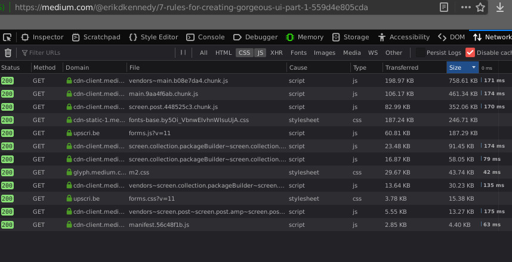
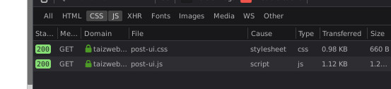

March 9th, 2020
What is site design? What makes a good site, well, good? Is it the colors? The layout? The animated gif backgrounds?
I don't know. Although I initially began as a web developer, I always struggled with coming up with good layouts. What font should I use? Where should the elements be? How about a colorscheme? I really don't know. I'd normally rely on my clients presenting me with one and then I'd take an hour playing with CSS to mimic it, but when it comes to sites of my own, I find myself at a loss. I know everything there is to using a brush and paint, but when it comes time to actually draw something, I hit a roadblock.
This essentially sums up the current design of my little site here. I started out tinkering away at a little markdown file and figuring out what I wanted on the site, then throwing some HTML together to reflect it. The site functions well, as it met my expectations and wants to a T. But is it nice on the eyes? Does it look pretty? I don't think so. But this little site does something that not a lot of "modern" blogs do nowadays.
Most bloggers tend not to be programmers, and if they are, they're probably in the same boat I am and couldn't design to save their lives. So many just go with the quick-and-dirty solution and sign up for medium and go on with their lives. Personally, I despise services like this, and in particular medium. For a single blog post, Medium loads a whopping 2MB of Javascript alone.

The Javascript used by a Medium pageFor those curious of my own site, I use a little over 1KB (two thousandth) of the Javascript to do practically the same thing:

I should also note that my site is doing this without minifying anything, so potentially I could have things even lighter.
As stated earlier, I'm happy with the site from a technical perspective. The site displays fine on mobile, the entire site is interconnected, and it's not painful to look at. I suppose I'll start looking deeper into web design and gradually improving the UI until I'm satisfied, but until then, enjoy the blast from the past.